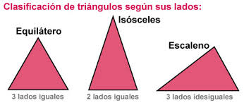

Crea una funciò que ha de rebre com a paràmetres els costats d'un triangle. La funció ha de retornar un missatge indicant si el triangle és equilàter, isòsceles o escalè.  Introduce tamaño del lado 1: Introduce tamaño del lado 2: Introduce tamaño del lado 3: